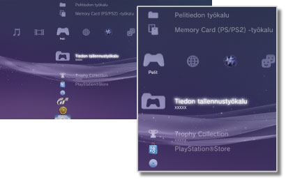

Pelit > Pelit-luokka
Pelit-luokka
 (Pelit) sisältää seuraavat kuvakkeet. Kuvakkeet vaihtelevat käyttöehtojen mukaan.
(Pelit) sisältää seuraavat kuvakkeet. Kuvakkeet vaihtelevat käyttöehtojen mukaan.

 |
PlayStation®Store | Näytä tietoja PlayStation®Storesta. |
|---|---|---|
 |
Lopeta peli | Lopeta PlayStation®3-muotoinen ohjelmisto. Tämä kuvake on näkyvissä vain pelaamisen aikana. |
 |
(nimike) | Pelaa PlayStation®3-muotoista ohjelmistoa. Kun kuvake on valittu, näytössä näkyy kuva. |
  |
PlayStation®2-levy | Toista PlayStation®2-muotoinen ohjelmanimike. |
 |
PlayStation®-levy | Toista PlayStation®-muotoinen ohjelmanimike. |
 |
Tiedon tallennustyökalu | Kopioi tai poista PlayStation®3-muotoisen ohjelmiston tallennettuja tietoja tai katsele niiden sisältöä. |
 |
Memory Card (PS/PS2)-työkalu | Luo sisäisiä muistikortteja ja valitse niille paikat. Korteille voi tallentaa PlayStation®2- ja PlayStation®3-muotoisten ohjelmistojen tietoja. Voit kopioida ja poistaa tallennettuja tietoja sekä katsella niiden tietoja. |
 |
Pelitiedon työkalu | Joissain peleissä voi tallentaa ylimääräisiä tietoja. Voit poistaa tietoja tai katsella niiden tietoja. |
 |
Trophy Collection | Voit tuoda näkyviin trophyt, jotka olet saanut trophy-toimintoa tukevista peleistä. Voit ansaita saavutuksistasi trophyjä, kun saavutat tiettyjä tasoja tai suoritat vaadittuja tehtäviä pelissä. |
 |
(PlayStation®3- tai PlayStation®2-muotoiset kiintolevylle asennetut ohjelmat) | PlayStation®3- tai PlayStation®2-muotoiset kiintolevylle asennetut ohjelmat. Näytössä näkyy peliä esittävä pikkukuva. |
 |
(kiintolevylle tallennetut tiedot) | Tämä kuvake näkyy kiintolevylle ladatun pelin tai laajennustietojen kohdalla. Tiedot asennetaan käynnistyksen yhteydessä. Kuvake määräytyy tietojen tyypin mukaan. |
Vihjeitä
- tai
 näytetään rajoitetun sisällön kohdalla. Sisältöä voi käyttää kirjoittamalla nelinumeroisen salasanan. Salasanan voi määrittää kohdassa
näytetään rajoitetun sisällön kohdalla. Sisältöä voi käyttää kirjoittamalla nelinumeroisen salasanan. Salasanan voi määrittää kohdassa  (Asetukset) >
(Asetukset) >  (Turva-asetukset).
(Turva-asetukset). - Jos järjestelmään on kytketty HDMI-kaapelilla laite, joka ei tue HDCP (High-bandwidth Digital Content Protection) -standardia, järjestelmä ei tuota kuvaa ja/tai ääntä.
- Tekijänoikeuksin suojattuja Blu-ray-levyjä voi toistaa 1080p-tilassa vain HDMI-kaapelilla liitetyllä laitteella, joka tukee HDCP-standardia.
- Joissain harvinaisissa tapauksissa PS3™-järjestelmä ei toista levyjä tai muita tallennusvälineitä oikein. Tämä johtuu yleensä valmistusmenetelmien eroista tai ohjelmiston koodauksesta.
Huomautukset
- Jotkin PlayStation®2- ja PlayStation®-muotoiset ohjelmistot voivat käyttäytyä eri tavoin PS3™-järjestelmässä kuin PlayStation®2- tai PlayStation®-järjestelmissä, ja ne eivät ehkä toimi PS3™-järjestelmässä oikein.
- PlayStation®2-muotoisia ohjelmistoja ei myöskään voi käyttää joissakin PS3™-järjestelmissä. Lisätietoja on kohdassa [Toistettavat levytyypit], oman alueesi SCE-verkkosivustossa ja PS3™-järjestelmän mukana toimitetuissa asiakirjoissa.